千葉流山市Ｉ様 水回りプレミアムフルセット半年毎の定期クリーニングをしました!

千葉県流山市のＩ様ご自宅の水回りプレミアムフルセットの半年毎の定期クリーニングを実施しました。Ｉ様のご自宅はとても綺麗な一戸建てです、キッチン、キッチン換気扇、浴室、洗面台、御手洗い2つ、今回は食洗機の内容洗浄クリーニングも実施のプレミアムフルセットクリーニングです。半年前に同様にプレミアムフルセットで水回りクリーニングをしており、ピカピカに清掃してあるのですが、ご家族の人数も多く、綺麗な一戸建て様であってもやはり半年経つと水回り各所はご覧の通り、添付の写真の様に汚れが付着しております。DAIZENプロフェッショナルメソッドによる「水回りプレミアムフルセットクリーニング」でスッキリ綺麗にリフレッシュしましたのでもう大丈夫です!Ｉ様の様に、プレミアムフルセットクリーニングを半年周期で実施するお客様がどんどん増えております、ぜひ宜しくお願いいたします。
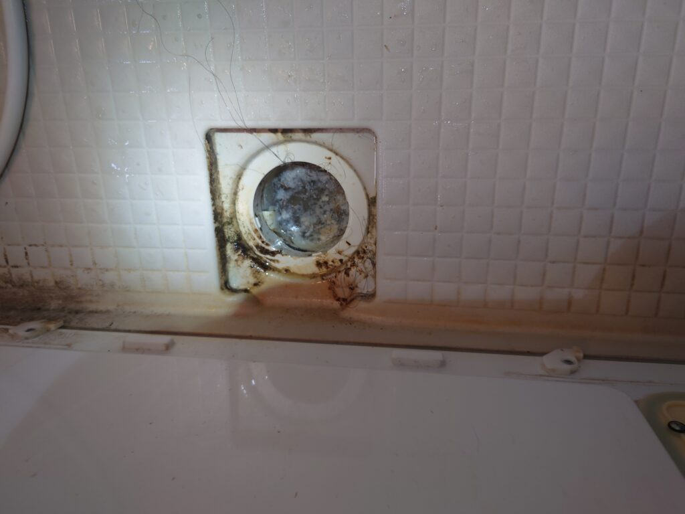
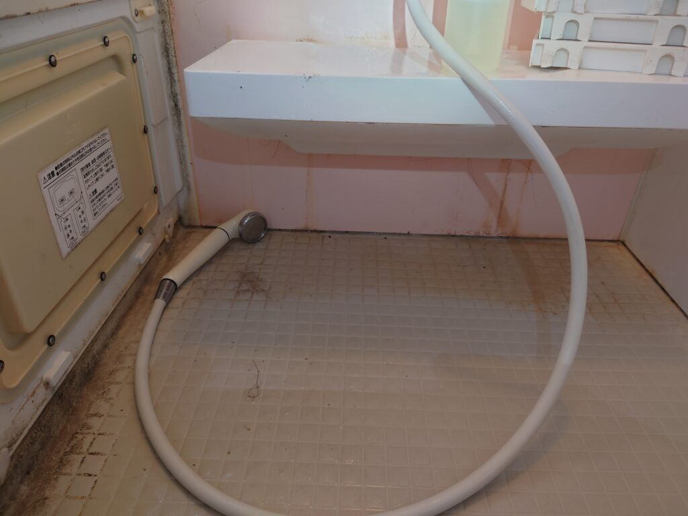
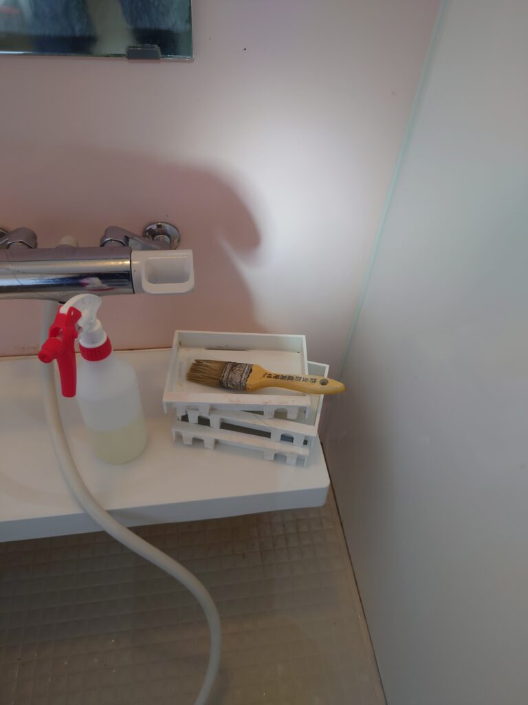
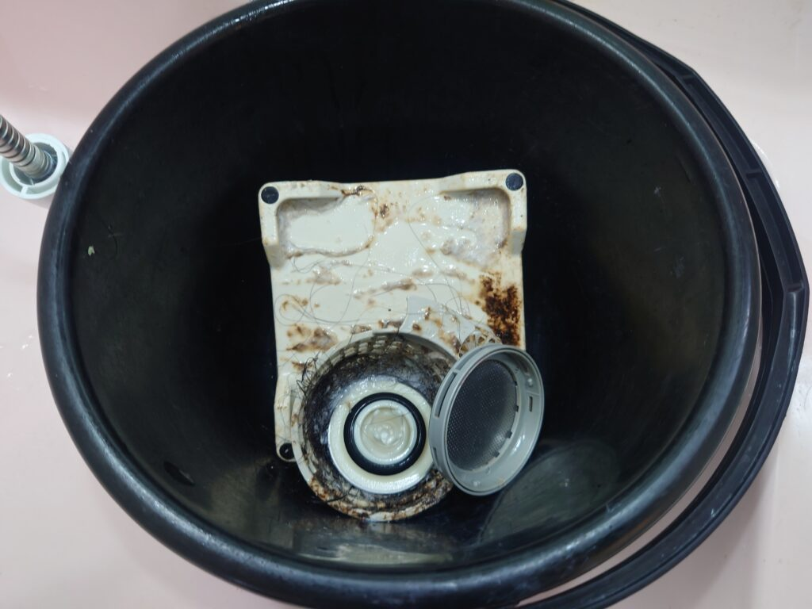
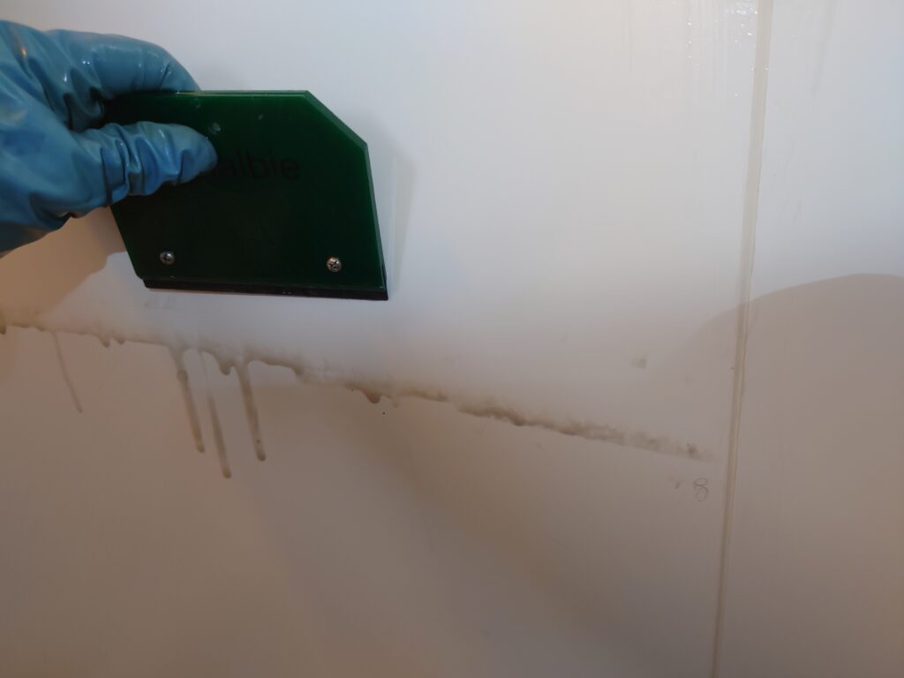
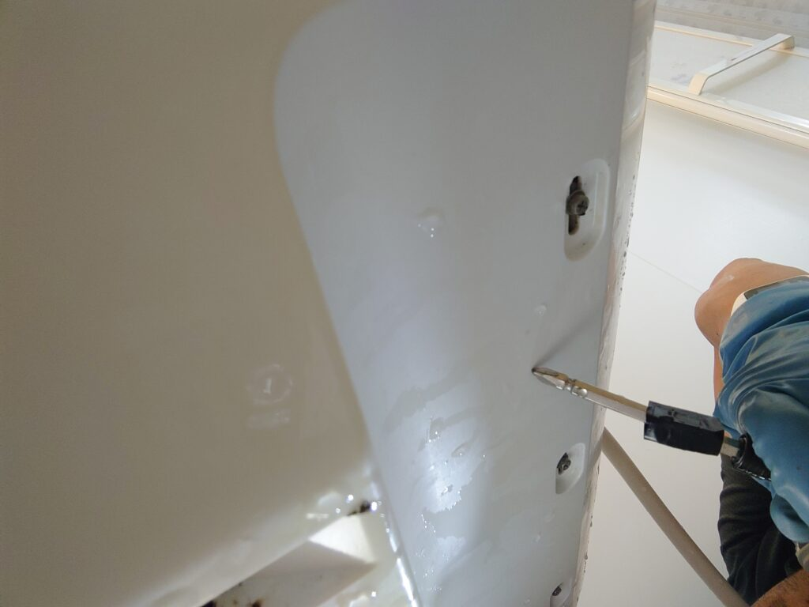
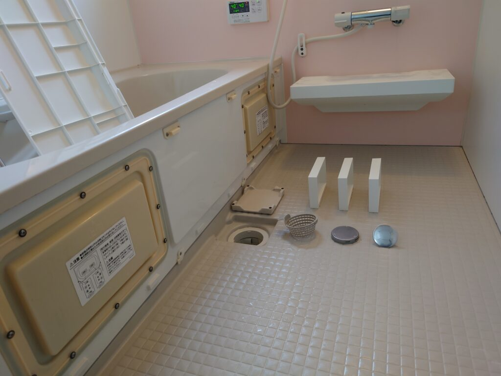
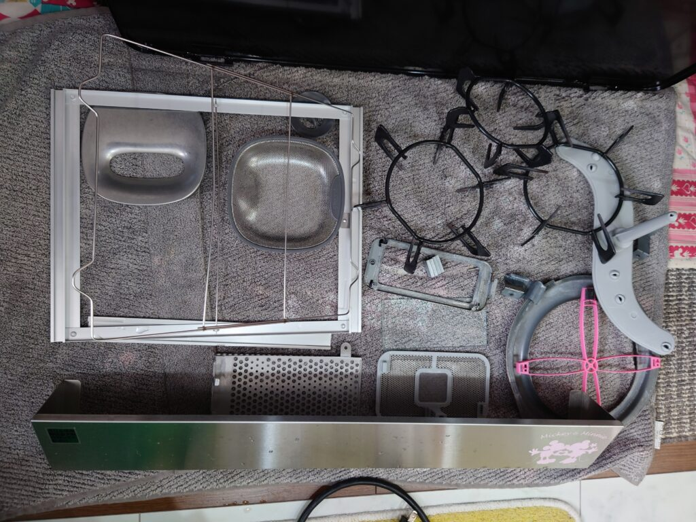

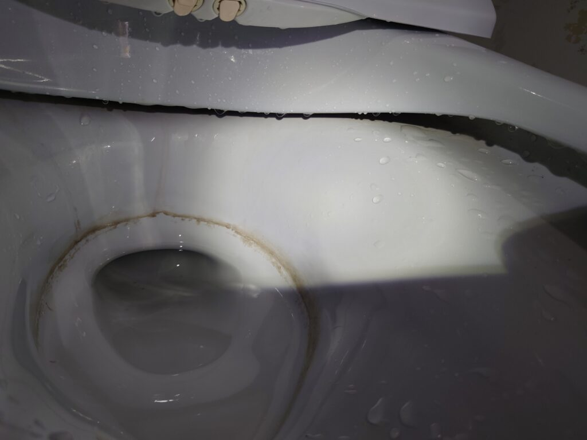
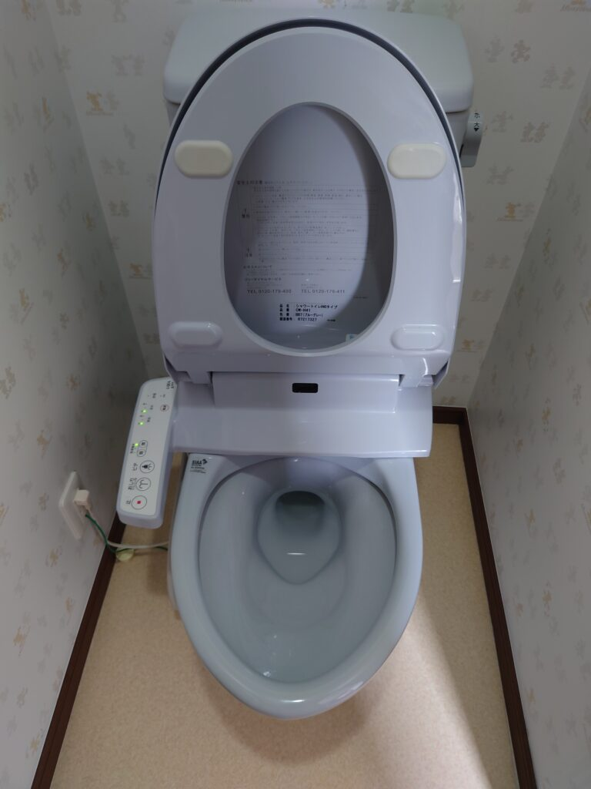
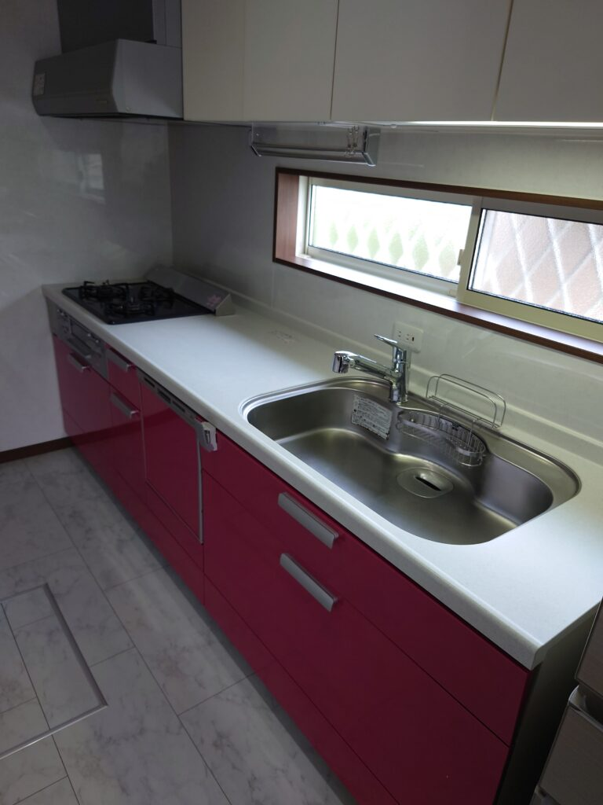
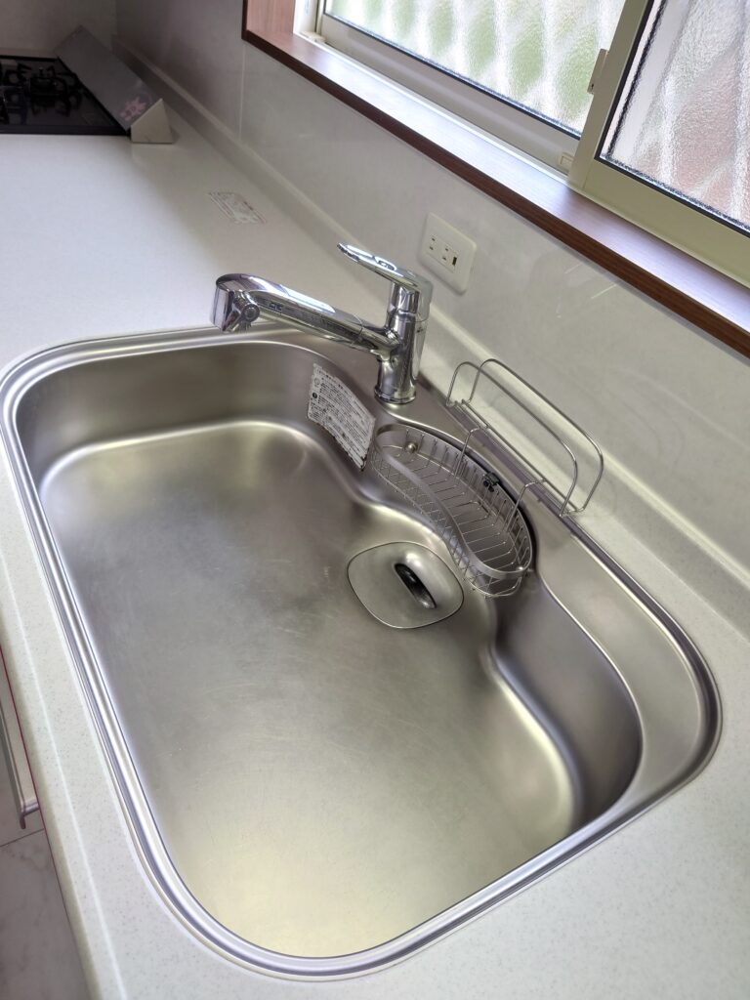
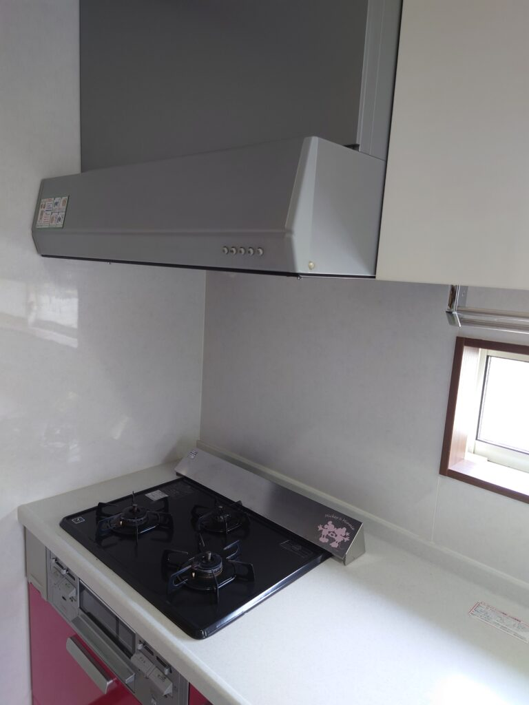